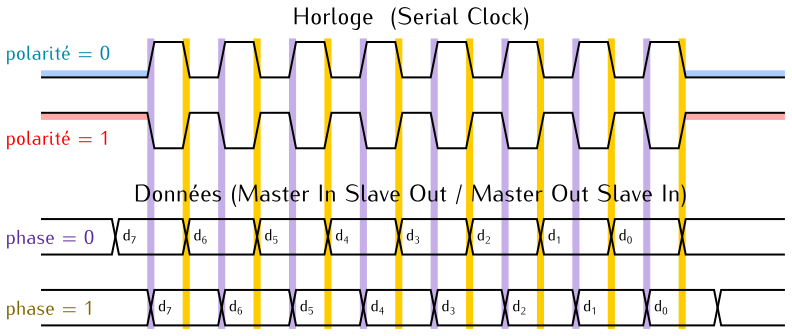

Maître et esclave SPI
Historiquement, les électroniciens utilisent les termes « maître » et « esclave »
(ou « master » et « slave ») pour désigner les rôles joués par les composants d’un
système lorsqu’ils communiquent ensemble.
Il s’agit d’une analogie qui vise à faciliter la compréhension :
dans un ordinateur, on dira que le processeur se comporte
comme un maître, et ses périphériques comme des esclaves.
Il ne s’agit pas de faire la promotion de l’esclavage, ni d’en minimiser
la gravité.
Cependant, depuis plusieurs années, cette terminologie est remise en question.
La communauté des informaticiens et électroniciens remplace progressivement
les mots « maître » et « esclave » par des termes plus neutres.
À notre connaissance, il n’existe pas encore de consensus sur le choix de ces
nouveaux termes.
Pour cette raison, cette page continue à utiliser les mots « maître » et
« esclave » qui restent très présents dans les documentations techniques
des constructeurs et dans les spécifications de protocoles.
Dans une communication SPI, le maître est le composant qui a l’initiative des
communications. L’esclave répond aux demandes du maître.
Le maître produit le signal d’horloge qui servira à cadencer l’émission et la
réception des bits de données.

La figure ci-dessus illustre le fonctionnement typique de deux composants SPI.
Le maître et l’esclave possèdent chacun un registre à décalage qui sert à la fois à l’émission et à la réception.
Les deux registres à décalage
sont reliés de manière à former un anneau.
Si on se place du point de vue du maître, la transmission d’une valeur se passe de la manière suivante.
À chaque période de l’horloge série :
- le bit le plus à gauche est envoyé vers l’esclave,
- le registre à décalage se décale d’une position,
- le bit en provenance de l’esclave est introduit à droite du registre à décalage
Dans une transmission SPI, l’envoi et la réception des données se font en parallèle.
Au bout de DATA_WIDTH périodes d’horloge, le maître et l’esclave ont simplement échangé les contenus
de leur registres respectifs.
Le protocole SPI
La synchronisation des données sur l’horloge série est définie par deux paramètres.
- La polarité de l’horloge détermine le niveau du signal d’horloge (bas ou haut)
en l’absence de communication.
- La phase indique si les données sont échantillonnées en commençant par le premier
ou le deuxième front d’horloge. Il peut s’agir d’un front montant ou descendant selon la
polarité de l’horloge.
La figure suivante représente une trame SPI pour un échange de 8 bits de données :

Ces deux paramètres autorisent quatre variantes du protocole SPI.
Pour que la communication ait lieu sans erreur, le maître et l’esclave doivent
avoir les mêmes réglages de polarité et de phase.
L’entité SPIMaster
L’entité SPIMaster est conçue comme un périphérique pour le processeur Virgule avec les ports suivants :
| Port |
Direction |
Type |
Rôle |
clk_i |
Entrée |
Logique |
Le signal d’horloge global |
reset_i |
Entrée |
Logique |
La commande de réinitialisation |
address_i |
Entrée |
Vecteur de 2 bits |
Le bus d’adresses |
write_i |
Entrée |
Logique |
La commande d’écriture |
data_i |
Entrée |
Vecteur de 8 bits |
Le bus de données en écriture |
data_o |
Sortie |
Vecteur de 8 bits |
Le bus de données en lecture |
done_o |
Sortie |
Logique |
Indique la fin d’un échange de données |
miso_i |
Entrée |
Logique |
Les données série en provenance de l’esclave |
mosi_o |
Sortie |
Logique |
Les données série à destination de l’esclave |
sclk_o |
Sortie |
Logique |
L’horloge de communication série |
cs_n_o |
Sortie |
Logique |
Commande de sélection de l’esclave (Chip Select) |
L’entrée address_i, sur deux bits, permet d’accéder à trois registres de 8 bits.
À l’adresse "01", seuls trois bits sont effectivement utilisés :
address_i |
Bits |
Registre |
Rôle |
"00" |
7 à 0 |
data_reg |
La donnée envoyée ou reçue. |
"01" |
0 |
cs_reg |
La commande de sélection de l’esclave |
"01" |
1 |
phase_reg |
La phase de l’horloge SPI |
"01" |
2 |
polarity_reg |
La polarité de l’horloge SPI |
"10" |
7 à 0 |
timer_max_reg |
La limite du compteur pour régler la vitesse de communication. |
Pour échanger une séquence d’octets sur le bus SPI, il faut :
- Régler
polarity_reg et phase_reg selon les caractéristiques de l’esclave. Mettre cs_reg à '1'.
- Attendre pendant une durée qui dépend de l’esclave.
- Écrire l’octet à envoyer dans
data_reg.
- Attendre que
done_o passe à '1'.
- Lire l’octet reçu dans
data_reg.
- Répéter les étapes 2 à 5 tant qu’il reste des octets à échanger.
- Attendre pendant une durée qui dépend de l’esclave.
- Remettre
cs_reg à '0'.
- Attendre pendant une durée qui dépend de l’esclave avant de commencer une nouvelle séquence.
On utilisera un timer pour mesurer le temps dans les étapes 2, 7 et 9.
La sortie done_o sera typiquement reliée au contrôleur d’interruptions.
Intégrer un contrôleur SPI à votre projet
Ajouter les fichiers sources
Le code source du contrôleur SPI est disponible dans votre dossier
CoCiNum/src/vhdl/SPI.
Avant de poursuivre, exécutez cette commande pour récupérer les éventuelles
modifications apportées à ces fichiers :
cd $HOME/CoCiNum
git pull
Ajoutez le fichier CoCiNum/src/vhdl/SPI/SPIMaster-precompiled.vhd
à votre projet.
Choisissez sur quel connecteur d’extension Pmod de la carte Basys3 vous allez
brancher votre périphérique SPI.
Sur la sérigraphie de la carte, ils portent les noms JA (en haut à gauche),
JB (en haut à droite), JC (en bas à droite), et JXADC (en bas à gauche).
Ajoutez au projet Vivado le fichier de contraintes
CoCiNum/src/vhdl/Basys3/Basys3_Pmod*.xdc correspondant.
Compléter le paquetage Computer_pkg
Dans le fichier Computer_pkg.vhd, ajoutez les définitions suivantes pour
définir la plage d’adresses associée au contrôleur SPI et au timer qui lui
sera associé :
constant SPI_TIMER_ADDRESS : unsigned := x"84000000";
constant SPI_MASTER_ADDRESS : unsigned := x"85000000";
constant SPI_MASTER_SIZE : positive := 12;
constant INTC_EVENTS_SPI_TIMER : natural := 3;
constant INTC_EVENTS_SPI_MASTER : natural := 4;
type device_t is (..., SPI_TIMER, SPI_MASTER);
Compléter l’entité
Dans le fichier Computer.vhd, complétez l’entité Computer en déclarant
les ports du connecteur d’extension que vous avez choisi.
Le tableau ci-dessous donne la liste des ports disponibles et leur rôle.
Ils sont tous de type std_logic.
| Rôle |
JA |
JB |
JC |
JXADC |
Mode |
| Chip Select |
pmod_a1 |
pmod_b1 |
pmod_c1 |
pmod_xadc1 |
out |
| Master Out Slave In |
pmod_a2 |
pmod_b2 |
pmod_c2 |
pmod_xadc2 |
out |
| Master In Slave Out |
pmod_a3 |
pmod_b3 |
pmod_c3 |
pmod_xadc3 |
in |
| Serial Clock |
pmod_a4 |
pmod_b4 |
pmod_c4 |
pmod_xadc4 |
out |
Compléter l’architecture
Dans le fichier Computer.vhd, complétez l’architecture pour intégrer le
contrôleur SPI et un second timer dans le système en utilisant les constantes
que vous avez ajoutées au paquetage Computer_pkg.
Inspirez-vous de l’exemple du timer que vous avez intégré dans l’activité
Gestion d’interruptions.
Par précaution, le port d’entrée correspondant à la ligne Master In Slave Out
devra être resynchronisé.
Modifiez l’instance sync_inst de la manière suivante :
sync_inst : entity work.InputSynchronizer
generic map(
WIDTH => 3
)
port map(
clk_i => clk_i,
data_i(0) => btn_center_i,
data_i(1) => uart_rx_i,
data_i(2) => ...,
data_o(0) => sync_reset,
data_o(1) => sync_uart_rx,
data_o(2) => sync_spi_miso
);
Une fois ce travail terminé, générez le fichier binaire à charger dans le FPGA :
Flow Navigator → Program and Debug → Generate Bitstream.
{kind=link}